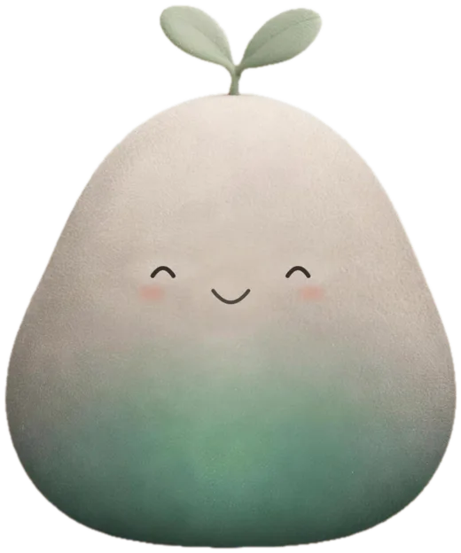
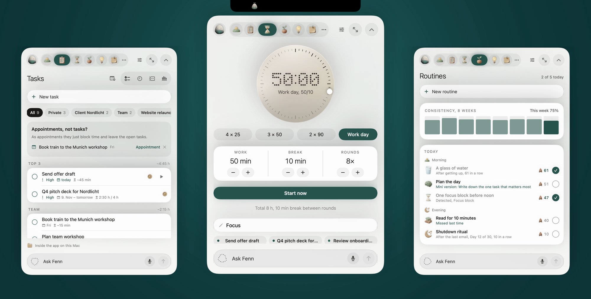
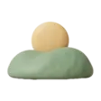
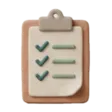
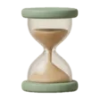
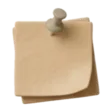
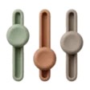

An agent that acts
Fenn creates tasks, plans your day around your meetings, moves tasks, starts focus blocks and switches modes. If something is unclear, it asks back.

Tasks, calendar, routines, notes and focus sessions in one small island, plus Fenn, a pebble who plans your day with you. The AI runs on your Mac with MLX, Ollama, LM Studio or Apple's on-device model. No account, no server, no subscription.
FREE, MIT LICENSE, MACOS 14+, ENGLISH AND GERMAN
Tasks, the focus timer and your routines, a click or a sentence away. Open it with ⌃⌥F or hover the notch. On Macs without a notch it docks under the menu bar or at a screen edge.

Everything works without any AI. A model adds the agent, day planning and note clean-up.
Fenn creates tasks, plans your day around your meetings, moves tasks, starts focus blocks and switches modes. If something is unclear, it asks back.

Focus time, routines, your calendar as a timeline and the tasks that matter now.

Topics, priority, due dates and estimates. As a list, a day timeline or a review of where the time went. Dated tasks can show up in their own Apple Calendar.

Pomodoro with presets and focus music, from Spotify or your own tracks.
Distracting apps stay closed during a focus block. A whole browser too, if you pick one.
Small habits stacked onto things you already do, with a two-minute version and an 8-week view.

Typed or dictated with on-device speech recognition. The AI turns a note into a title, summary and to-dos.
A few friendly questions on first launch: what you do, your working hours, your best focus time and how Fenn should talk to you. Saved as you go, editable any time.

Focus, Leisure, Recovery or your own modes, each with its own modules and app block. Desktop widgets for Today, tasks, routines, Pomodoro and Fenn.
Let Claude Code, Cursor or any MCP client read and, if you allow it, change your tasks and day. Local only and off until you switch it on.
Type in the island, press ⌃⌥F and dictate, or let another agent call Fenn's tools over MCP.
Fenn builds the context fresh for every request: your profile and goals, recent journal entries, routines, the last seven days, a running timer and the best matching notes from your second brain.
Up to eight steps. Small models only see the tools that fit. Tools that start something only run when you asked for it, and each action runs once per request.
Tasks, calendar, timer, app blocker, routines, ideas and memory change in your own folder and apps. Simple commands like “25 minutes focus” work without any model.
Fenn Focus never picks a cloud model for you. A key is only needed if you choose a cloud provider yourself.
| Runs with | Key needed | Leaves your Mac |
|---|---|---|
| Built-in: downloads an open model (Qwen 3.5, Gemma 4 …) and runs it with MLX | no | no |
| Ollama | no | no |
| LM Studio | no | no |
| Apple on-device model (macOS 26, Apple Intelligence) | no | no |
| Claude, OpenRouter, any OpenAI-compatible server | your own | yes, after you agree once |
| Unified memory | Model | Ollama |
|---|---|---|
| 8 GB | Qwen 3.5 4B | qwen3.5:4b |
| 16 GB | Qwen 3.5 9B | qwen3.5:9b |
| 24–32 GB | Gemma 4 26B A4B | gemma4:26b |
| 32 GB | Qwen 3.6 35B A3B | qwen3.6:35b-a3b |
| 48 GB+ | Qwen 3.8 27B | qwen3.8:27b |
All recommended models are Apache-2.0. Details in the model guide.
There is no telemetry and no Fenn Focus server. Your data is plain Markdown and JSON in a folder you choose.
| What | Where |
|---|---|
| Tasks, routines, notes, ideas, journal | Your Fenn Focus folder (iCloud Drive or any folder) as Markdown and JSON, or inside the app until you pick one |
| Downloaded models | The app's own container on your Mac |
| API keys, if you add any | macOS Keychain, this Mac only |
| Settings | macOS user defaults of the app |
Switch on Connections › Fenn as an MCP server, choose “Read only” or “Read and change”, and paste the line the app shows. It listens on 127.0.0.1 only and needs a token. For Claude Code it looks like this:
claude mcp add --transport http fenn http://127.0.0.1:<port>/mcp --header "Authorization: Bearer <token>"
Your coding agent then sees the same tools Fenn uses: tasks, day schedule, focus, routines and more.
FennFocus.zip from the latest release and unzip it.
Move Fenn Focus into your Applications folder and open it.
Go to System Settings › Privacy & Security and click “Open Anyway”. Then Fenn says hi in the notch.
Why step 3: the app isn’t notarised by Apple, so macOS asks once. You can read and build every line of the code yourself.
Needs Xcode. Desktop widgets need your own signing team in Config/Local.xcconfig.
git clone https://github.com/koernertom/fenn-focus.git && cd fenn-focus && ./Scripts/install.sh
Yes. It is MIT-licensed, has no paid tier and needs no account. The recommended models are Apache-2.0 and free to download.
Not unless you choose it: a cloud model with your own key (nothing is sent until you switch on the consent for that provider, which also lists what gets sent), a model download from Hugging Face, or Spotify if you use it for focus music.
Yes. Tasks, calendar, focus timer, app blocker, routines and notes work without any model. The model adds the agent, day planning and note clean-up.
macOS 14 or later. Built-in models need Apple Silicon; 8 GB is enough for Qwen 3.5 4B.
Yes, it is the same app: the island docks under the menu bar or at a screen edge.
Yes. Each person installs Fenn Focus on their own Mac; there is no server to run and no seats to buy. Everything stays in each person's own folder. Check your company's rules for installing open-source apps first.
Issues and pull requests are welcome on GitHub. Please keep it local-first and key-free.